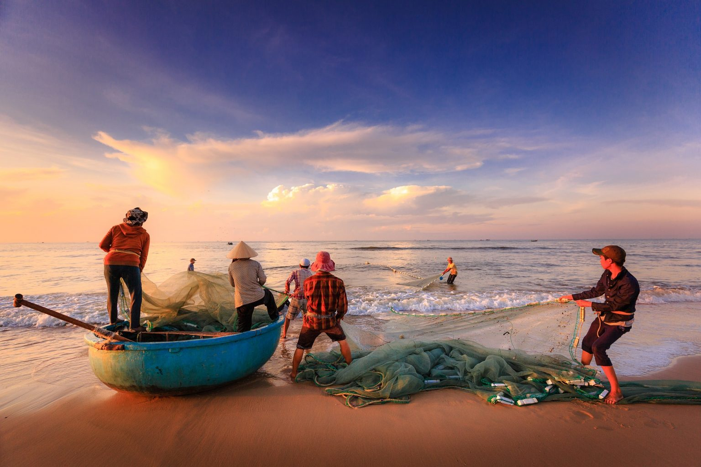

Informasi budidaya perikanan, jumlah kolam, kelompok perikanan, dan hasil produksi Desa Suntenjaya.

Informasi budidaya ikan air tawar, kelompok pembudidaya, serta hasil produksi perikanan.
Jenis ikan yang banyak dibudidayakan masyarakat Desa Suntenjaya.
Kolam budidaya ikan tersebar di berbagai wilayah desa dan dikelola oleh masyarakat secara mandiri maupun kelompok.
Kelompok pembudidaya ikan berperan dalam meningkatkan hasil produksi dan pemasaran hasil perikanan.
Sektor perikanan memberikan kontribusi terhadap pendapatan masyarakat melalui budidaya ikan air tawar yang dipasarkan ke pasar tradisional, restoran, dan pengepul di wilayah Bandung Barat.
| Produksi Ikan | 35 Ton/Tahun |
| Harga Rata-rata | Rp30.000/Kg |
| Perkiraan Nilai Produksi | ± Rp1.050.000.000/Tahun |
| Pembudidaya | 110 Orang |
Budidaya ikan air tawar menjadi salah satu sumber pendapatan tambahan bagi masyarakat Desa Suntenjaya.
| Jenis Ikan | Produksi/Tahun | Harga Rata-rata | Perkiraan Pendapatan |
|---|---|---|---|
| Ikan Nila | 12 Ton | Rp30.000/Kg | Rp360.000.000 |
| Ikan Mas | 8 Ton | Rp32.000/Kg | Rp256.000.000 |
| Lele | 7 Ton | Rp28.000/Kg | Rp196.000.000 |
| Gurame | 5 Ton | Rp45.000/Kg | Rp225.000.000 |
| Mujair | 3 Ton | Rp25.000/Kg | Rp75.000.000 |
| Total | 35 Ton | - | Rp1.112.000.000 |
Desa Suntenjaya memiliki potensi pengembangan budidaya ikan air tawar karena didukung oleh ketersediaan sumber air yang melimpah dan kondisi lingkungan yang masih alami.
Hasil budidaya ikan dipasarkan ke wilayah Lembang, Bandung Barat, Kota Bandung, dan daerah sekitarnya untuk memenuhi kebutuhan konsumsi masyarakat.
Ikan nila merupakan komoditas utama sektor perikanan Desa Suntenjaya dengan produksi sekitar 12 ton per tahun. Selain ikan nila, masyarakat juga membudidayakan ikan mas, lele, gurame, dan mujair sehingga sektor perikanan menjadi salah satu penunjang perekonomian desa.